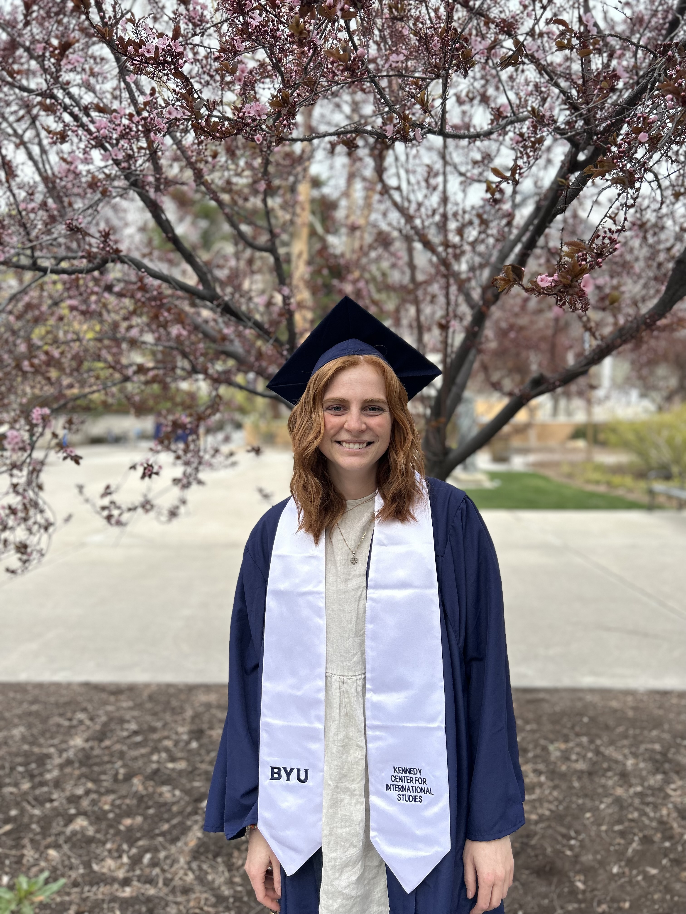

My name is Nicole Francis and I am currently preparing to apply to PhD programs in Classics. I graduated with my BA in Ancient Near Eastern Studies with an emphasis on the Greek New Testament and a minor in Business from Brigham Young University in 2023, and will be graduating with a Masters in Comparative Arts and Letters with a Classics emphasis in the Spring of 2025. I absolutely love archeology and was able to participate in the Huqoq excavation headed by the University of North Carolina at Chapel Hill under the direction of Dr. Jodi Magness during the Summer 2023 season. I also have a great interest in the crossroads between Early Christian literature, including the New Testament, and classic Greek and Roman literature. I have also taken classes with an emphasis on Early Christian art and other material culture.

Beyond academia, I enjoy a variety of hobbies. I enjoy taking advantage of the beautiful scenery around the Provo area where I have attended school the last five years, including hiking, skiing, and visiting the local national parks. I also play the violin and am currently attempting to pick up the banjo. I enjoy writing poetry and I like to think that from the hours I have spent watching Gordon Ramsey on Food Network that I am vicariously a pretty good chef.


I have had a number of oppurtunities that have not only shaped my academic interest, but my overall appreciation for a number of cultures. In the summer of 2022, I had the oppurtunity to spend a semester abroad at the BYU Jerusalem Center. I had the oppurtunity to learn not only about the rich culture and history of Jerusalem both ancient and modern, but I also traveled to Greece and Jordan. I have also had the oppurtunity to be a Research Assistant, TA, and teach a number of undergraduate level courses. I have also had a number of papers published.


Back to the top